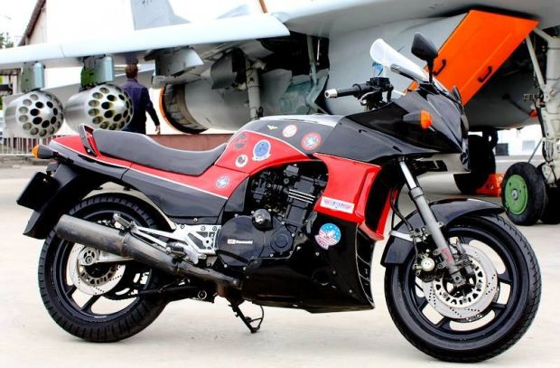

- Pojemność skokowa: 908 ccm
- Typ silnika: Rzędowy czterocylindrowy
- Ilość suwów: 4
- Moc maksymalna: 115.00 KM (83.9 kW)) przy 9500 RPM
- Stopień sprężania: 11.0:1
- Średnica cylindra x skok tłoka: 72.5 x 55.0 mm
- Liczba zaworów na cylinder: 4
- Układ rozrządu: DOHC
- System chłodzenia: Ciecz
Kawasaki GPZ 900R Ninja zawsze było ikoną, która wraz z Tomem Cruisem jako Maverickiem rozpalała wyobraźnię facetów, niezależnie od wieku i narodowości. Nie każdy mógł spełnić marzenia i latać myśliwcem, ale każdy dziś może gnać taką maszyną jak Top Gun. Produkowany od 1984 roku motocykl rozwijał moc 115 KM z pojemności 900 cm³, ważył jedynie 228 kg i był dopracowany pod względem aerodynamiki, co pozwalało osiągnąć mu imponującą na owe czasy prędkość 250 km/h. To prawdziwy superbike, który sprawdzał się nie tylko na ekranach kin. Fani filmu z pewnością nie przejdą obok niego obojętnie, tym bardziej, że TOP GUN 2: Maverick zobaczymy w kinach już w przyszłym roku. Wtajemniczeni już wiedzą, że ta klasyczna odmiana Kawasaki też się pojawi w tej nowej odsłonie!